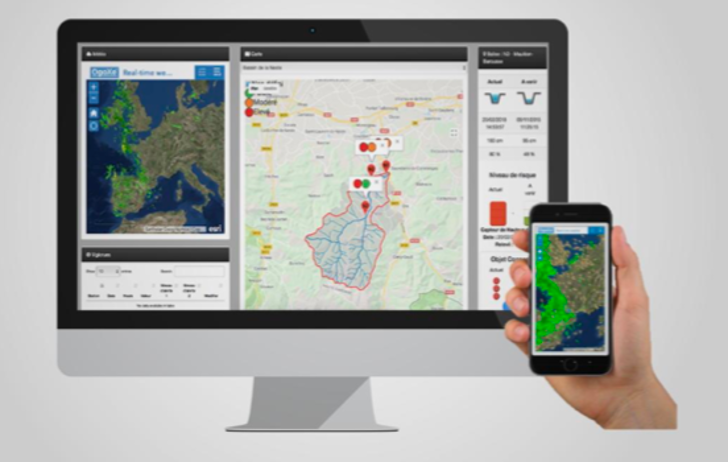

Présentation de Waves'n See
Description
L’entreprise Waves'n See est une startup soutenu par l’IRD (institut de recherche pour le développement) qui à pour but d’identifier et localiser les déficits de sédiments afin d’optimiser les opérations de ré-ensablement sur les plages côtières, mesurer. Pour faire ceci, un réseau de caméras et un logiciel d'analyse d'images permettent de suivre les ressources sédimentaires dans les zones littorales. Une fois les caméras mises en place, Waves'n See redonne la main aux gestionnaires de littoral en mettant à leur disposition un site regroupant des données locales et continues, accessibles facilement et à distance, recueillies à partir d’une simple caméra vidéo.
Histoire
Fondée par deux océanographes en 2015, Waves’n See est une startup issue de la recherche publique. Ils développent une technologie issue des recherches de l’IRD en matière de télédétection. L’IRD les a accompagnés dans le projet de création via sa cellule de transfert et valorisation de la technologie. Après deux années de recherche et de développement, ils commencent à vendre leurs premier produit en 2017 pour un client Vietnamien, depuis Waves’n See est devenu un des leaders dans son secteur et domine le marché avec sa performance technologique à la pointe.
Caractéristiques
| Finalité | Empêcher l’eau de prendre le dessus sur les plages qui se font engloutir de plus en plus. |
| Objectif | Étudier les déplacements des sédiments sur les plages |
| Activité | Surveiller et analyser l’avancement de la mer sur la plage |
| Domaine d'activité | Commerciale |
| Nationalité | Française |
| Champs d'actions | région côtière dans la monde |
| Taille | PME |
| Ressources humaines | 10 employés à l’année |
Les parties prenantes
(tableau ou organigramme)
Modèle économique
Présentation des produits
WaveCams:
Leurs systèmes de caméras WaveCames sont installés en haut de plage, et filment la zone de déferlement(Le déferlement des vagues est la déformation rapide du profil de l'onde afin d’observer la puissance des vagues qui arrive sur les plages). Les données sont ensuite rapatriées sur des serveurs et sont traitées.
Les données extraites sont analysées par des océanographes pour en extraire les informations nécessaires en fonction des besoins d’observation propres à la problématique du site. L’acquisition de données se fait à haute fréquence, ce qui permet, selon les paramètres, un suivi à différentes échelles de temps, du quasi temps réel au très long terme.

Accès aux données et image en temps réelle:
Ils fournissent un accès en temps réel aux données et aux images grâce à un site web dédié à ceci. En même temps leurs équipes d’ingénieurs mettent à jour les information en fonction de leurs études sur chaque site adaptés aux problématiques de chaque site.

Les Services:
En suppléments de la technologie des WaveCams, l’entreprise Waves’n See propose aussi différents services axés sur le suivi de plusieurs données pour étudier l’évolution morphologique des plages. Voici les services en question:
-Topographie/bathymétrie: Étudier l'environnement de la plage, sa taille, la hauteur des vagues, les profondeurs de l’eau… -Données de vagues: Calcule et étude du déferlement des vagues sur les plages, célérité, point de déferlement des vagues sur la plage, dimension et puissance à l’impact… -Bilan Hydro-sédimentaire: Évolutions et déplacements des sédiments (sable).
Présentation des dépenses
Waves’n See après ces emprunts et les levés de fonds à réussis à récupérer 245 000€
- L’observatoire Midi Pyrénés à financer 35 000€ de sa poche pour soutenir le projet.
- Levés de fond 200 000€
- 10 000€ d’emprunts auprès de la banque.
Présentation des recettes
Leur premier client est apparu en 2017 au Vietnam et le second est sur le sol Français, depuis leurs débuts Waves’n See se sont déployés sur le marché mais malgré ça il ne gagne pas encore assez d’argent avec leurs abonnements pour moins se soucier de l'argent à la fin de l'année.
Modèle adopté
Depuis sa création Waves’n See adopte le même modèle économique en vendant leurs système de vidéo surveillance les wavecams avec en supplément leurs service pour étudier les sites sur lesquels sont installés leurs caméras. Mais sur demande ils peuvent aussi être payer pour leurs services en mettant à dispositions leurs experts afin de réaliser des études sur d’autres sites qui ne sont pas équipés de caméras.
Leur modèle économique est simple :
- Les frais d'installation des caméras sur le site.
- Un abonnement mensuel ou à l'année pour transmettre les résultats des calculs et des études menés
Etude de la chaine de valeur
Les activités principales
- La commercialisation : Depuis presque le début de sa création Waves’n See à passé 2 ans à améliorer son produit en faisant des recherches et à partir de 2017 leurs premiers clients sont apparus d’abord à l’étranger puis enfin en France. Les clients paye un abonnement en plus de l’achat des caméras pour que les experts exécutent les calculs et surveillent l'avancée de l’eau sur la plage.
- Services : Waves’n See en plus de leurs système de surveillance met à disposition de leur client et de ce qui désire payer ces services comme pour avoir la topographie d’une plage, les données sur les vagues ou encore des bilans Hydro-sédimentaires.
Le développement/conception : Waves’n See vend ses WaveCams pour permettre l’étude sur le long terme de l’évolution de la plage, les changements qui sont apparus grâce à des machines qui calculent les informations transmises par les caméras.
Les activités secondaires
- Les infrastructures de l’entreprise : La startup possède un bâtiment qui permet de comprendre l’ensemble des machines et bureau nécessaire pour les employès.
- Les ressources humaines : Une RH est aussi en activité afin de gérer les équipes de recherche et veiller à la bonne entente des équipes.
- La recherche et le développement : Elle est assurer par les chercheurs et ingénieurs qui effectuent les calculs et étudie les bancs de sable
- Les achats : Les principaux achats qu’effectue Waves’n See sont les caméras et les machines de calculs utiliser
Outils de diagnostic externes et internes:
Analyse des forces concurrentielles
Cesentreprises proposent des capteurs et des solutions différentes mais dans un modèle proche de celui de waves’n see :
- Kiwatch
- Paratonic
Kiwatch et Paratronic sont les deux entreprises qui entrent le plus en concurrence avec Waves’n See, l’une Kiwatch à un système de vidéo monitoring qui est utilisé en général dans des bâtiments clos avec des caméras qui permettent de capter les mouvements et les déplacements de tout être humains et objet solide. L’autre Paratronic est une entreprise qui à un système de vidéo monitoring différents qui va permettre de capter les mouvements de l’eau afin de pouvoir étudier son sur élèvements afin d’anticiper les débordements et pouvoir y remédier a temps.
Analyse PESTEL
Politque
- Pour le bien des touristes du monde entier il est important que les politiciens sauve et secourt les plages en exécutant des opérations de ré-ensablements pour regagner les mettre voler par l’eau pour qu’ils sauvent la population de l’inquiétude de la domination des éléments naturels sur les hommes, mais aussi des pertes économiques que la disparitions des plages pourrait entraîner sur le système touristiques.
Economique
- L'etat accorde des subventions aux entreprises impliqué dans l'économie verte(green tech)
- Lever de fonds et financement par des personnes extérieures à l’entreprise.
Socioculturel
- Si ce phénomène continue et que les plages disparaissent, les touristes habitués à aller à la plage dès que l’été arrive seront impactés, mais aussi les restaurateurs, les vendeurs etc…
Technologique
- Technologie haut de gamme des capteurs de surveillance et d’analyse de données.
Ecologie
- Éviter que l’ensemble des plages du monde soit submergé par l’eau et engloutissent tous les bancs de sable.
- Sauver les animaux qui ont besoin de ces bancs de sable sur les cotes pour chasser, se nourrir, se poser en cas de vents trop forts pour les espèces migratrices.
Legal
- Loi littoral 24 janvier 1986 qui prévoit que l’accès au plages est gratuit car c’est un bien public, mais si les plages se retrouvent englouties elle n'appartiendra plus à personne ce qui pourrait poser problèmes aux communes côtières.